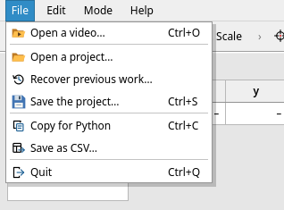
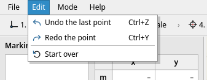
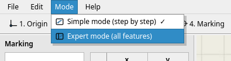
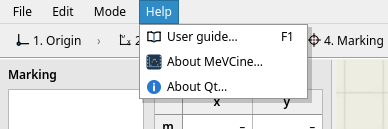

Menus, keyboard and mouse
Find a command, its shortcut or its mouse gesture
Identify menu commands
A greyed-out command becomes available when it applies. For example, marking a first position enables Copy for Python and Save as CSV.


| Open a video… | The folder with a play triangle opens a video. |
|---|---|
| Open a project… | The open folder resumes a .mevcine file. |
| Recover previous work… | The clock with an arrow opens a session backup. If several exist, you can choose one. |
| Save the project… | The disk saves the measurements and session settings. |
| Copy for Python | The two sheets copy the NumPy arrays to the clipboard. |
| Save as CSV… | The table with an arrow exports the time and position columns. |
| Quit | The arrow leaving a doorway closes MeVCine. |


| Undo the last point / Undo deletion | The left arrow undoes the last change to the marks. |
|---|---|
| Redo the point | The right arrow reapplies the action you just undid. |
| Start over | The circular arrow resets the axes, scale and marks for the open video. Save your project first if you want to return to it. |


| Simple mode (step by step) | The window with steps opens the five guided steps. |
|---|---|
| Expert mode (all features) | The divided window opens the marking and analysis tabs. |


| User guide… | The open book opens this guide. |
|---|---|
| About MeVCine… | The MeVCine logo opens the version, licences and settings file location. |
| About Qt… | The information symbol identifies Qt, the library used for the interface. |
Keyboard shortcuts
| Keys | Action |
|---|---|
| ← →, Page ↑ Page ↓ | previous frame, next frame |
| Ctrl+Z / Ctrl+Y | undo the last point / redo it |
| Esc | cancel drawing the reference, the measurement to redo, choosing the origin (expert mode); leave full screen; close a message |
| Enter | confirm the length of the reference; close a message (but never confirm an action that would lose measurements) |
| Ctrl+C | copy the measurements for Python (outside a text field) |
| Ctrl+O | open a video |
| Ctrl+S | save the project |
| Space · Shift + arrow | In the video, confirm the assisted marking target or move it by one pixel. |
| F1 | this guide, at the page of what you are doing |
| F11 | mark in full screen; Esc or F11 goes back to the window |
| Ctrl++ / Ctrl+− | enlarge or shrink the whole interface (from 50 to 300%) |
| Ctrl+0 | bring the interface back to its normal size |
| Ctrl+Q | quit |
In the table, use the arrow keys to preview the active cell. The bin deletes all objects in that row. Undo deletion restores them. When redoing a row, Esc cancels all clicks made during that correction.
The mouse on the frame
| Gesture | Effect |
|---|---|
| Click | place the origin (step 1, or after Place the origin); mark the object (while marking); one end of the reference (while drawing it) |
| Drag the origin | move the origin: at steps 1 and 2 of simple mode, and in expert mode before marking or after Place the origin. Over the origin, the cursor becomes a hand. |
| Drag | draw the reference from one end to the other; draw a box around an object (automatic tracking). While marking, a small drag counts as a click: the point is placed when the button is released. |
| Right-click | cancel drawing the reference |
| Hover during free marking | The magnifier enlarges the area under the pointer and shows its coordinates alongside. |
| Click in the magnifier | In assisted marking, click the recognised feature to record its position and move on to the next measurement. |
| Grapher | Follow the curve to read the coordinates of the measured points. Click a point to see its frame. Scroll to zoom, drag to pan and double-click to show the whole graph. |
The magnifier
During free marking, move the pointer over the object. The magnifier enlarges the area under the crosshair. Its title identifies the expected action, such as placing the origin, selecting a scale endpoint or marking object 2. The point is recorded when you release the button.
During assisted marking, the crosshair stays on the suggested feature. Press Space to accept it. For a one-pixel correction, hold Shift and press an arrow, then press Space. You can also click the actual position in the magnifier.
The coordinates beside the magnifier follow the chosen axes. In simple mode the unit changes from pixels to metres after calibration. In expert mode you can compare both readings. To check a recorded measurement, locate its frame in the table.